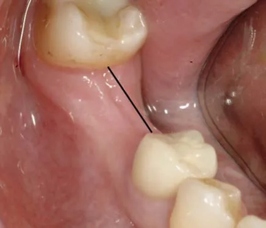
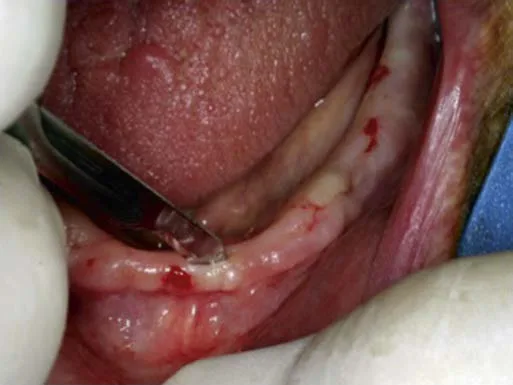

نسخه استخراجشده؛ ترجمه یا تأیید علمی انجام نشده است. وضعیت: captured
طراحی فلپ ایدهآل یک هدف محوری دارد: حفظ خونرسانی. و از این هدف، یک قاعدهی کمّی بیرون میآید:
طول فلپ نباید از دو برابر پهنای قاعدهاش بیشتر شود. هرچه قاعده پهنتر، خونرسانی مطمئنتر. فلپ باریک و بلند یعنی نوکش کمترین خونرسانی را دارد — و همانجاست که نکروز و باز شدن خط برش شروع میشود.
در همان حال، فلپ باید دسترسی کافی برای دیدن کل میدان جراحی بدهد. یعنی دو خواستهی رقیب: دید کافی، و کمترین آسیب به خونرسانی.
و نشانهی هشدار: اریتم، ادم و ناراحتی بیش از حد انتظار میتواند نشانهی خونرسانی مختلشده باشد — یعنی چیزی در طراحی فلپ درست نبوده.
برشهای رهاسازی عمودی نقش دوگانه دارند: هم به حفظ خونرسانی کمک میکنند و هم تنش فلپ را کاهش میدهند. و کاهش تنش، پیامد زنجیرهای دارد که در ادامه میبینی.
هنگام طراحی، برشها باید از ساختارهای حیاتی دور بمانند — مثلاً فورامن منتال و عصب لینگوال در مندیبل. در مندیبل بسیار تحلیلرفته که عصب منتال روی کرست آمده، برش را به لینگوال ریج ببر تا از روی عصب نگذرد. اینجا همان آناتومی ماژول ۳ مستقیماً به قلم جراح تبدیل میشود.

عمق برش. برش باید تا حدی باشد که استخوان را خط بیندازد. دلیلش عملی است: همین کار امکان رفلکشن تمامضخامت بافت را فراهم میکند. برش ناقص یعنی رفلکشن سخت و بافت پارهشده.
برش تیز. برشهای تیز و قاطع، تروما به خط برش را کم میکنند — و نتیجهاش آسیب بافتی کمتر و تورم کمتر پس از عمل است. برشهای مکرر و ارهای، بافت را له میکنند.
و نکتهی رفلکشن: بافت باید بهاندازهی کافی رفلکت شود تا فرزها به آن آسیب نزنند. رفلکشن ناکافی یعنی بافتی که در مسیر مته میماند.
مدیریت لثهی کراتینیزه. معیار، پهنای بافت چسبنده روی کرست است. اگر ۳ میلیمتر یا بیشتر است، برش آن را نصف میکند تا هر طرف حدود ۱٫۵ میلیمتر داشته باشد. اگر کمتر از ۳ میلیمتر است، برش را لینگوالتر بزن تا دستکم ۱٫۵ میلیمتر بافت چسبنده در سمت باکال بماند. این همان منطقی است که در مندیبل قدامی هم دیدی — از آنچه هست بهترین استفاده را ببر.
فلپهای تهاجمیتر مانند مثلثی و ذوزنقهای هم وجود دارند و دسترسی بیشتری میدهند؛ ولی هر افزایش دسترسی، بهایی در تروما و خونرسانی دارد. به همین دلیل در بایوتایپ نازک، بهخاطر تنشی که روی فلپ میگذارند، منع دارند.
و یک تحول تکنولوژیک: امروز میتوان گایدهای جراحی را بر پایهی CBCT در مطب چاپ سهبعدی کرد؛ همین دقت تکنیکهای فلپلس را بالا برده است — هرچند مسئلهی شستوشو و گرمای استخوان همچنان سر جایش باقی است.
